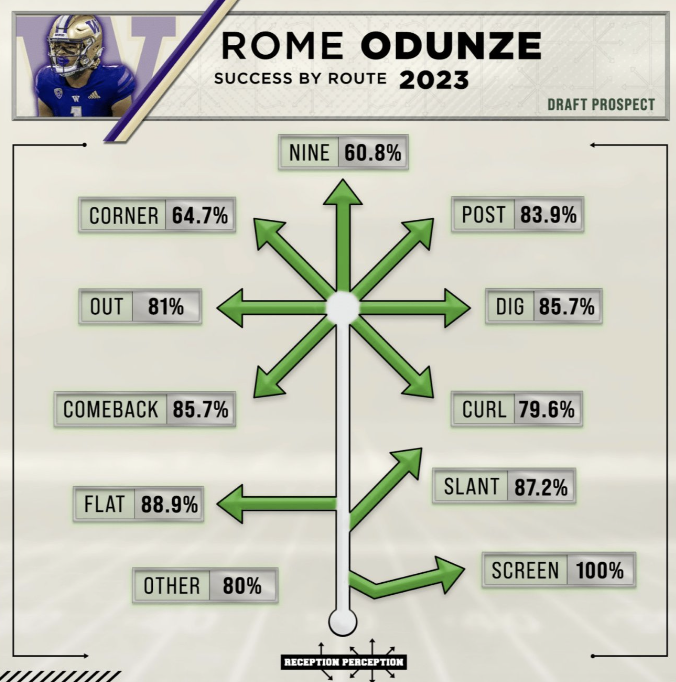
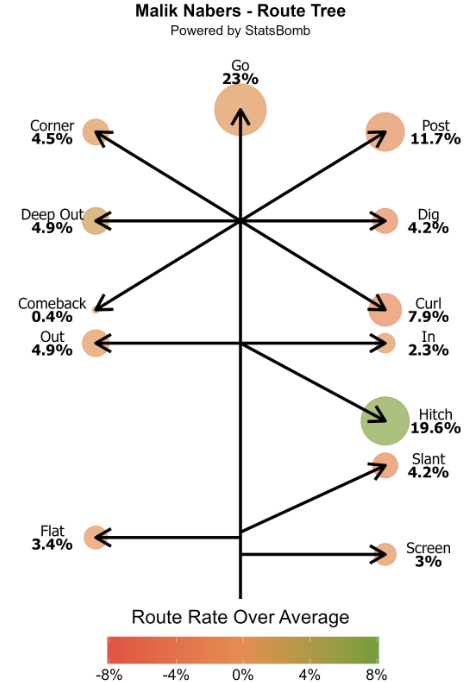
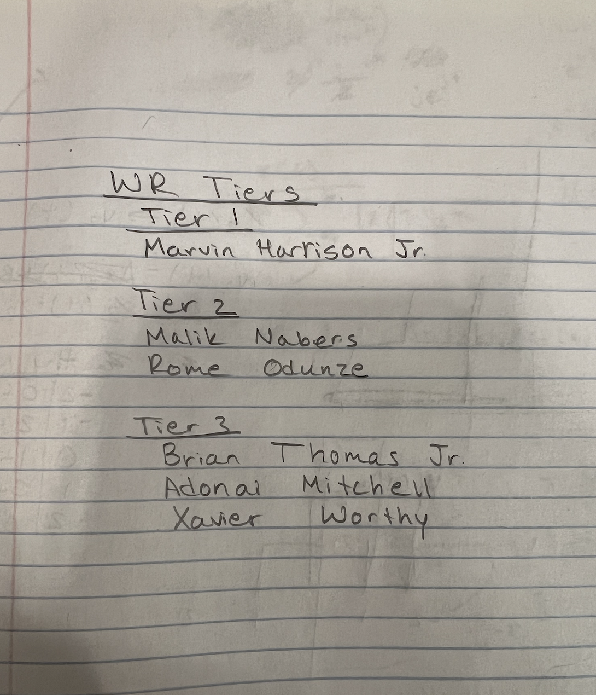

Attendance:
- Kainoa Woessner
- Barry Sanders
- Philip Rivers
- Melvin Gordon
- Lawrence Taylor
- Randy Moss
Agenda:
- Talk about upcoming wide reciever prospects
- Weight the importance of certain characteristics for the position
- Assign new prospects to evaluate
Unfinished Business from Last Meeting:
- Present the last few running back prospects from last meeting
- Discuss the top 3 at the running back position
New Business:
- Discuss the importance of wide reciever traits for grading
- Split up prospects to watch and visit
Miscellaneous Comments:
- One member believes there is a better grading method
- The cafeteria is lacking healthy options
Diagrams:
Rome Odunze Route Tree
Malik Nabers Route Tree
Whiteboard Diagrams:
Wide Reciever Tiers Notes
Presentations:
Route Running
Pro:
Precision: Effective route running enables the receiver to create
separation from defenders, making it easier for the quarterback to complete passes.
Con:
Predictability: If a receiver becomes too predictable in their routes, defenders can anticipate
their movements, making it easier to defend against them.
Catch Ability
Pro:
Hands: Strong hands and good catching technique enable receivers to make
difficult catches in traffic and secure the ball even when defenders are nearby.
Con:
Drops: Even the best receivers can struggle with drops from time to time, which can result
in missed opportunities and turnovers.
Yards After Catch (YAC) Ability
Pro:
Elusiveness: Receivers with strong YAC ability can evade defenders and gain additional
yardage after making the catch, turning short passes into significant gains.
Con:
Tackling: Defenders are trained to tackle effectively, and receivers with YAC ability often face
multiple defenders converging on them quickly after the catch, making it challenging to break free.